For their strengths
While choosing the best characters will not make you instantly good at the game, it can certainly help you find success. The top tiers of a game have better tools to win, which is helpful, as most people don’t like losing. It’s important to understand that this shouldn’t isolate you to one character, as the best players in the world have been successful with a variety of characters, all with different degrees of viability. This factor appeals more to competitive natured players who want nothing to hinder their growth.
Examples of competitively strong characters are:  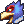 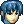 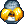 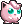 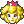 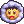 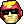
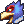 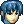 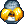 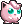 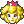 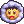 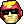